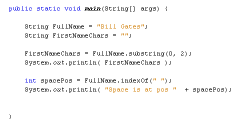

Learn Java- Complete Offline Beginners Guide
To get some practice with substring, we'll write a small Name Swapper game. For this game, we want to change the first two letters of a family name and swap them with the first two letters of a personal name, and vice versa. So if we have this name:
"Bill Gates"
we would swap the "Ga" of "Gates" with the "Bi" of "Bill" to make "Bites". The "Bi" of "Bill" will then be swapped with the "Ga" of "Gates" to make "Gall". The new name printed out would be: "Gall Bites"
We'll use substring for most of this programme. Substring works like this:
String FullName = "Bill Gates";
String FirstNameChars = "";
FirstNameChars = FullName.substring( 0, 2 );
You set up a string to search, in this case the string "Bill Gates". The string you're trying to search goes after an equals sign. After a dot, type the name of the method, substring. There are two ways to use substring, and the difference is in the numbers between the round brackets. We have two numbers in the code above, 0 and 2. This means start grabbing characters at position 0 in the string, and stop grabbing when you have two of them. The two characters are then returned and placed in the variable FirstNameChars. If you always want to go right to the end of the string, you can just do this:
String test = FullName.substring( 2 );
This time, we only have 1 number between the round brackets of substring. Now, Java will start at character two in the string FirstName, and then grab the characters from position 2 right to the end of the string.
Start a new programme to test this out. Add a print line to the end and your code should be this:
When the programme runs, the Output window should look like this:
So the substring method has allowed us to grab the first two characters of the name "Bill".
To get the first characters, we had a 0 and a 2 between the round brackets of substring. You might think that to get the "Ga" of "Gates" that we could just do this:
= FullName.substring(5, 2);
We still want two characters, after all. Only this time, the 5 would tell Java to start from the "G" of "Gates". (The first position in a string is position 0 not position 1.) So, start at position 5 in the string and grab 2 characters.
However, running that code would get you an error. That's because the second number between the round brackets of substring doesn't mean how many characters you want to grab. It means the position in the string that you want to end at. By specifying 2 we're telling Java to end at the character in position 2 of the string. As you can't go from position 6 backwards to position 2 you get an error instead.
(NOTE: If you start the count at 0 in the string "Bill", you might think that position 2 is the letter "l". And you'd be right. But substring starts before the character at that position, not after it.)
To get the "Ga" of "Gates", therefore, you could do this:
FullName.substring( 5, FullName.length( ) - 3 );
The second number is now the length of the string minus 3 characters. The length of a string is how many characters it has. "Bill Gates" has 10 characters, including the space. Take away 3 and you have 7. So we're telling substring to start at character 5 and end at character 7.
And that would work perfectly well for people called "Bill Gates". But the programme wouldn't work if you name was, say, "Billy Gates". The code above would then grab the space character plus the letter "G", which is not what we want at all. We want the programme to work whichever two names are entered. So we have to get a bit clever.
One thing we can do is to note the position of the space in the two names. The 2 characters we want to grab from the second name always come right after the space character. We want some code that grabs those first two characters after the space.
We can use indexOf to note the position of the space:
int spacePos = FullName.indexOf(" ");
To specify a space character you can type a space between two double quotes (or single quotes). This then goes between the round brackets of indexOf. The value returned will be an integer, and it is the position of the first occurrence of the space character in the string FullName.
Test it out by adding the line above to your code: Add a print line to check the Output:

Run the programme to see the following Output:
So the space is at position 4 in the string. We can use this fact to grab the first two characters of "Gates", or indeed any second name. We tell Java to go from the first character after the space, and end at the next two characters:
FullName.substring( spacePos + 1, (spacePos + 1) + 2)
So the two numbers between the round brackets of substring are these:
spacePos + 1, (spacePos + 1) + 2
We want to start at the first character after the space (space + 1), and end two characters after this position, which is (spacePos + 1) + 2.
Add the following lines to your code (The ones highlighted. Our new substring method spills over on to two lines, but you can keep your on one, if you prefer):
When you run the programme, the Output window is this:
So we now have the "Bi" from Bill and the "Ga" from Gates. What we now need to do is get the rest of the characters from the two names, and then swap them around.
Again, we can use substring to get the remaining characters from the first name:
String OtherFirstChars = "";
OtherFirstChars = FullName.substring( 2, spacePos );
System.out.println( OtherFirstChars );
And the remaining characters from the second name:
String OtherSurNameChars = "";
OtherSurNameChars = FullName.substring((spacePos + 1) + 2,
FullName.length() );
System.out.println( OtherSurNameChars );
Not the numbers in between the round brackets of substring. To get the other first name characters, the numbers are these:
2, spacePos
This tells Java to start at position 2, and go right up to the position of the space. To get the rest of the second name, however, it's a little bit trickier:
(spacePos + 1) + 2, FullName.length( )
The (spacePos1 + 1) + 2 is the starting position of the third character of the second name. We want to end at the length of the string, which will get us the rest of the characters.
Add the following to your code (highlighted):
The Output is this:
We now have all the parts of the name. To join them together, we can use concatenation:
Add the new lines to your own code. When you run your programme, the Output window should display the following:

We can get rid of the print lines, though, and invite a user to enter a first name and second name. Here's the new programme (the only addition is for the keyboard input, which you've used before):
The Output window should look something like this, when you run your programme and enter a first name and surname:
We should, of course, add some error checking. But we'll assume the user can enter a first name and surname with a space between the two. If not, the programme will crash! Let's move on, though, and have a look at the equals method.